सीमेंट मोर्टार का उपयोग दीवारों के निर्माण में ईंटों/ब्लॉकों को स्थिति में बांधने के लिए किया जाता है।
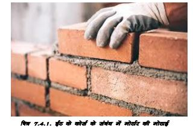
ईंटों/ब्लॉकों चिनाई के लिए मोर्टार बनाने के लिए पोर्टलैंड या पोर्टलैंड पॉजोलाना सीमेंट (43 ग्रेड) का उपयोग करें।
आरसीसी कार्य, प्लास्टरिंग और अन्य संरचनात्मक अनुप्रयोगों के लिए साधारण पोर्टलैंड सीमेंट (ओपीसी) का उपयोग करें।
कार्य और प्लास्टर के लिए मोर्टार बनाने के लिए एक भाग सीमेंट और 6 भाग साफ रेत का उपयोग करें।
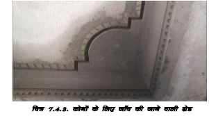सीमेंट मोर्टार का उपयोग दीवारों के निर्माण में ईंटों/ब्लॉकों को स्थिति में बांधने के लिए किया जाता है।
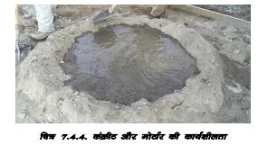ईंटों/ब्लॉकों चिनाई के लिए मोर्टार बनाने के लिए पोर्टलैंड या पोर्टलैंड पॉजोलाना सीमेंट (43 ग्रेड) का उपयोग करें।
ईंटों/ब्लॉकों चिनाई के लिए मोर्टार बनाने के लिए पोर्टलैंड या पोर्टलैंड पॉजोलाना सीमेंट (43 ग्रेड) का उपयोग करें।
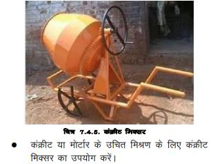 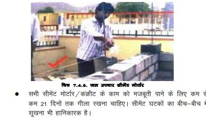 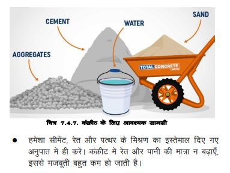 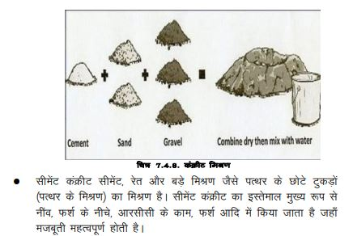 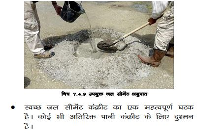 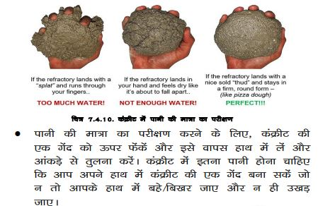 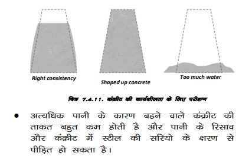 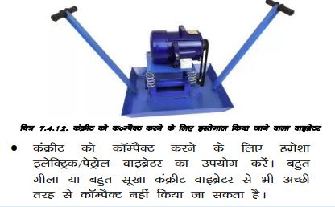